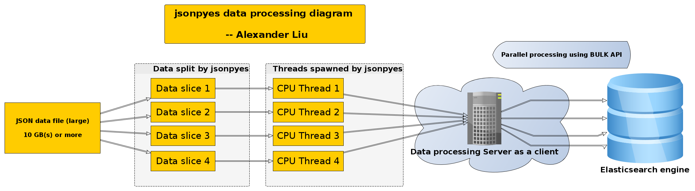

Documentation version v 1.0
Elasticsearch is an Apache Lucene-based search server. It was developed by Shay Banon and published in 2010. It is now maintained by Elasticsearch BV. Its latest version is 2.1.0.
Elasticsearch is a real-time distributed and open source full-text search and analytics engine. It is accessible from RESTful web service interface and uses schema less JSON (JavaScript Object Notation) documents to store data. It is built on Java programming language, which enables Elasticsearch to run on different platforms. It enables users to explore very large amount of data at very high speed.
The general features of Elasticsearch are as follows −
The key concepts of Elasticsearch are as follows −
If your data is too large use "curl" command to export data because browzer has limitation.
Create Index: In this section, we will add some index, mapping and data to Elasticsearch. This data will be used in the examples explained in this tutorial.
curl -XPUT http://localhost:9200/schools
Response: It can contain index specific settings, but for now, it is empty for default settings.
{"acknowledged": true}(This means index is created)
Create Mapping and Add data:Elasticsearch will auto-create the mapping according to the data provided in request body, we will use its bulk functionality to add more than one JSON object in this index.
curl -XPOST http://localhost:9200/schools/_bulk -d @(address-of-json-file)
To check all data from specific index: (All data will return in json fomrat)
curl -XGET /_search{"query": {"match_all": {}}}
We are using json-py-es for importing and validating JSON file. We can all the things together or deprately as per requirements.
Working strucutreThere are 3 proccesses of importing raw JSON data to ElasticSearch
A valid JSON file here refers to a JSON file stacked with many lines of data
file valid_data.json and its content
{"key1": "valueA", "key2": {"sub_key1": "value2A", "sub_key2": ["Good", "Morning"]}}
{"key1": "valueB", "key2": {"sub_key1": "value2B", "sub_key2": ["Good", "Afternoon"]}}
...
{"key1": "valueC", "key2": {"sub_key1": "value2C", "sub_key2": ["Good", "Evening"]}}
1. Validating JSON format data
jsonpyes --data raw_data.json --check
If the json data file is valid:
json valid
If the json data file is invalid:
json invalid
2. Only importing without validating
jsonpyes --data raw_data.json --bulk http://localhost:9200 --import --index myindex2 --type mytype2
Notice: If the raw JSON data file is invalid, jsonpyes will not import it.
Or enable multi-threads
jsonpyes --data raw_data.json --bulk http://localhost:9200 --import --index myindex2 --type mytype2 --thread (Number_of_threads)
Notice: If the raw JSON data file is invalid, jsonpyes will not import it.
3. Both validating and importing
jsonpyes --data raw_data.json --bulk http://localhost:9200 --import --index myindex1 --type mytype1 --check
For more information please visit official HPC site: Click here!
Code released under the MIT License License.
For more information about copyright and license check MIT licence.